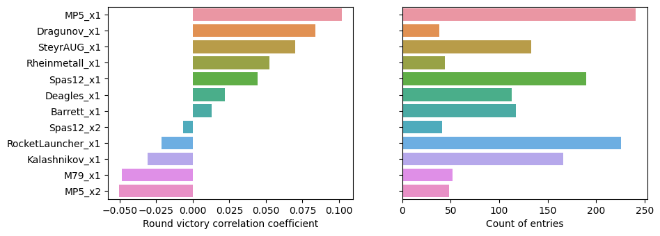
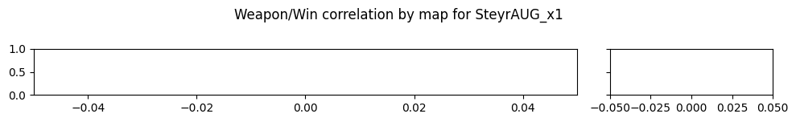
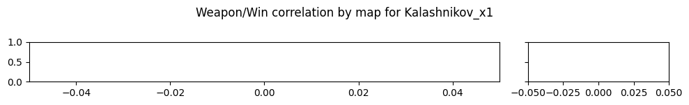
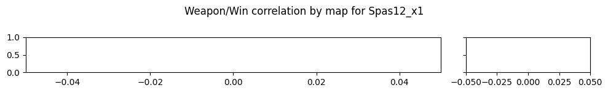
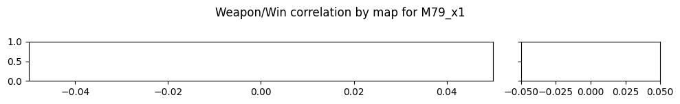
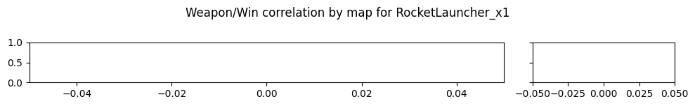
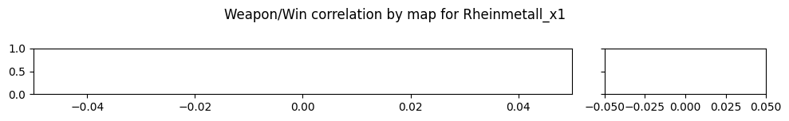

Weapon/win corr in Rankeds
Parameters
Start date: 1970-01-01 00:00:00
Playlists: CTF-Standard-6
Min samples: 50
Max match imbalance: 20%
(eg worst balance: Red team win probability 40.0% and 60.0% for Blue)
Data summary
| First game | 2022-04-13 |
| Last game | 2023-03-20 |
| Games total | 1626 |
| Rounds total | 4134 |
| Games in playlist `CTF-Standard-6` | 1626 |
Aggregated result

Grouped by map
Not enough samples for 17 maps

Grouped by weapon







